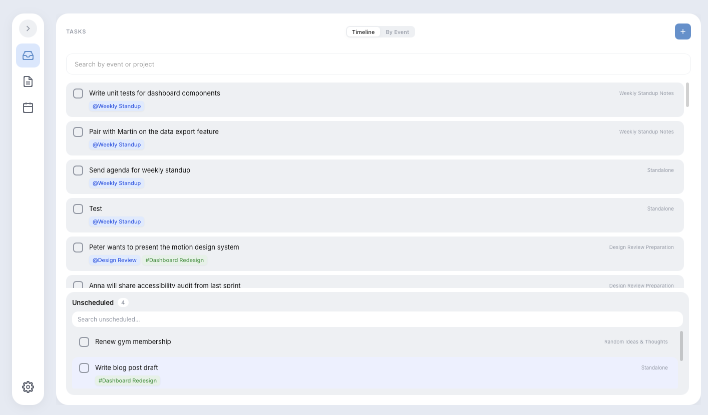

Gera links your calendar events directly to the tasks and notes they generate. Everything in one place, stored as plain files you always own.

Core concepts
Meetings, appointments, and any occurrence tied to a specific time. Events are the anchor — everything else orbits around them.
Actions you need to complete. Each task knows which event created it and which note provides its context — no more free-floating to-dos.
Your knowledge, ideas, and reference material. Notes supply the background context for events and tasks — and Gera can extract tasks from them automatically.
Local-first architecture
Gera stores everything as standard .md and YAML files on your drive. Open them in Vim, VS Code, or Obsidian whenever you want. Nothing is ever sent to a server.
Files stay on your drive. Sync only if you choose to, using your own tools.
Markdown and YAML. Readable by any editor, versionable with Git.
Stop using Gera any day and your data is still perfectly intact and portable.
Markdown extraction
Already writing notes in Markdown? Point Gera at any * [ ] list and it will pull those tasks into your workspace automatically — linked back to the original note for full context.
Works with your existing Obsidian vault, Bear exports, Notion exports, or any plain Markdown file.
How Gera fits in
Free and open source. Your files, your rules.